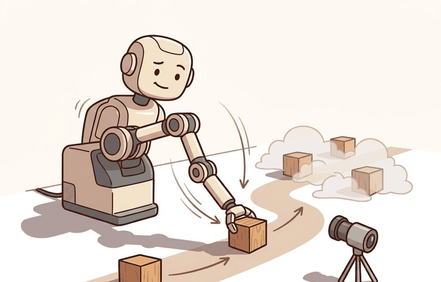
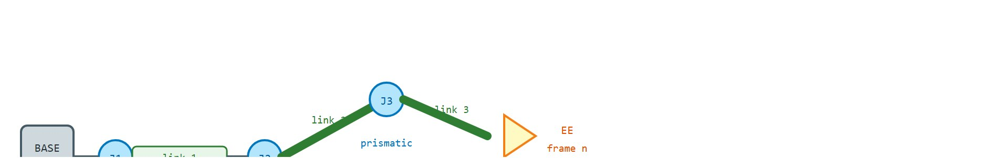
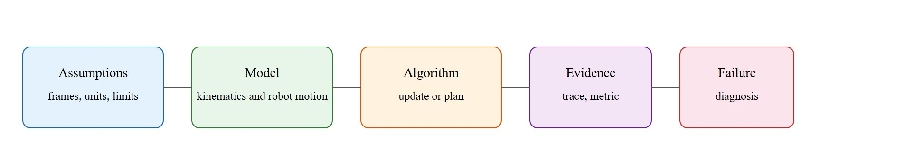

"Each joint buys you one freedom and sells you one responsibility. The chain collects both debts."
An Arm Assembler

This section assumes familiarity with homogeneous transforms and frame composition from section 4.4, and with URDF frame trees from section 4.5. The kinematic chain model introduced here feeds directly into the Jacobian formulation in section 5.6, which extends it to velocity-level analysis and singularity detection. The same chain abstraction recurs throughout Part 9 alongside contact-rich manipulation planning, particularly in section 42.3.
A warehouse robot reaches for a bin at 2 a.m. Its gripper misses by four centimeters, knocking the part to the floor. The fault is not in the motor or the vision model: a single joint index is off by one, and every downstream frame has been wrong from the start. This is the problem the kinematic chain was invented to prevent. As embodied AI moves from structured factories into kitchens, clinics, and construction sites, robots must reason reliably about their own geometry across thousands of configurations they have never seen before. Here you will build that reasoning from the ground up: rigid links, joint types, composed transforms, and the invariant that ties them together.
Six revolute joints, each free to swing a few hundred degrees, multiply into a configuration space so vast that a robot arm can reach the same point three ways: elbow up, elbow down, or wrist flipped through the middle. One thing stands between that freedom and a crashed gripper: a strict accounting of how each joint feeds the next. This section builds that accounting into a usable mental model. First we define the object of study, then we connect it to the agent loop, then we test it with a compact implementation.
The key question in Robot arms, joints, the kinematic chain is practical: what must the agent know, what can it observe, what action is available, and what evidence shows that the action worked under the stated conditions?
A representation earns its place when it changes the measurable action interface. In Robot arms, joints, the kinematic chain, the reader should keep asking which decision becomes easier, safer, or more reliable.
Figure 5.4A shows the full picture this section builds toward: a 6-DOF arm with each joint labeled by type, its DH parameter table (a standard four-number-per-joint convention, link length, link twist, link offset, and joint angle, that fixes each joint's transform without ambiguity), and the resulting chain from base link to end-effector. The kinematic chain abstraction exists to solve a concrete mapping problem. A robot arm must map a high-level task goal, such as "place the gripper 30 cm above the conveyor," into specific motor commands for each of its joints. Without a systematic way to track how each joint rotation propagates through the structure, a planner would need to re-derive geometry from scratch for every configuration. The kinematic chain gives the agent a single composable model: multiply the transforms in order and you immediately know where every link and the end-effector sit in the world frame. This composability is what makes motion planning, workspace analysis, and closed-loop control tractable.
So far: a robot arm's kinematic chain is the ordered product of per-joint transforms (each defined by DH parameters), it exists because re-deriving geometry from scratch for every configuration would be intractable, and its composability is what makes planning and control tractable in the first place.
A six-joint arm needs 6 transform multiplications to reach any configuration. Without the chain, each query recomputes up to 36 frame relationships from scratch. A motion planner that samples 10,000 candidate configurations then runs that recomputation 360,000 times instead of 60,000 multiplications. The chain abstraction is therefore not a convenience but a prerequisite for real-time planning. Without the chain, embodied systems cannot reliably reason about reachability, avoid collisions, or hand off a grasp target to a controller.
For Robot arms, joints, the kinematic chain, the practical design rule is to make the interface inspectable before optimization begins: inputs, outputs, units, latency, bounds, and failure labels should all be visible in the saved artifact.

The diagram above traces this structure concretely: a base frame, three links joined by two revolute joints and one prismatic joint, and an end-effector whose pose is the ordered product of every per-joint transform. A robot arm is a sequence of rigid links connected by joints. Each joint contributes one controlled motion, usually a rotation for a revolute joint or a translation for a prismatic joint. The kinematic chain is the ordered product of those link transforms, so a small upstream joint change moves every downstream frame. Counting joints tells you what the chain can reach at all: a full 6-DOF pose in 3D space (position plus orientation) typically needs at least six independent joints, which is why most industrial arms carry six or seven revolute joints rather than three or four.
That ordered product is identical in form for every joint, but the shape of the reachable space it carves out depends entirely on what kind of motion each joint contributes. Joint type matters for embodied AI because it determines the workspace geometry and the actuator hardware. A revolute joint sweeps a circular arc, so its reach depends on the arm's posture; stacking multiple revolute joints produces the curved, dexterous workspaces seen in industrial arms. A prismatic joint translates linearly, offering direct, predictable reach extension but limited angular coverage. Choosing the wrong joint type for a task (for example, a prismatic wrist trying to reorient a screwdriver) forces awkward compensations across the entire chain, often pushing the arm toward singularities (configurations where the arm loses a degree of freedom in task space, covered fully in section 5.7) or joint-limit boundaries in real operation.
Before reading on, consider this: if you swap the order of just two joints in the kinematic chain description while leaving the physical arm unchanged, where does the end-effector end up, and does any error get raised?
Mechanically, a revolute joint pivots two links about a shared axis on a bearing, and its encoder (the sensor that reports the joint's current angle or position back to the controller) reads the swept angle. A prismatic joint slides one link along another on a rail, and its encoder reads linear displacement. The chain model abstracts both as a single bounded degree of freedom and treats them identically in the transform product; only the column of the homogeneous matrix that the joint variable updates differs.
This is why joint order is load-bearing geometry, not an administrative detail. If the URDF frame tree, the controller's joint vector, and the planner's joint vector disagree by one index, the end-effector pose can look plausible while the physical arm moves the wrong link. A kinematic chain that reaches the right pose for the wrong reason is not a solution: it is a failure waiting for a different target.
A common assumption is that the kinematic chain provides a unique, invertible mapping: one end-effector pose maps to exactly one set of joint angles. This is wrong in nearly every real embodied system. A 7-DOF arm placing an object in 6-DOF space has infinitely many joint configurations that reach the same pose. These form a continuous null space of redundant solutions, where the null space is the set of joint motions that leave the end-effector pose unchanged. A robot with fewer joints than task dimensions simply cannot reach all poses, and no planning recovers the missing freedom. Treat the kinematic chain as a many-to-one function from joint space to task space. Forward kinematics is always computable. Inverse kinematics requires choosing among multiple solutions (or acknowledging infeasibility), and that choice carries real consequences for collision avoidance, joint-limit margins, and dexterity near the target.
Think of a chef reaching to place a single cherry on the exact center of a cake. There are countless ways to position and angle the shoulder, elbow, and wrist to get the fingertip to that spot: the destination is unique but the arm posture is not. Forward kinematics is like watching the fingertip land and recording only where it ended up. Inverse kinematics is the reverse question: given where the cherry needs to go, which of the infinite arm postures should you choose? The answer depends on what else is in the way, how tired each joint is, and how quickly you need to move next.
When loading a URDF into Pinocchio, call pin.buildModelFromUrdf() and immediately print model.names to compare the library's joint ordering against your controller's joint-state topic. A one-index offset is the single most common source of a kinematic chain that computes a plausible end-effector pose while commanding the wrong physical joint. Cross-checking model.names against /joint_states at load time costs two lines and eliminates an entire class of silent correctness failures.
The mechanism in Robot arms, joints, the kinematic chain is the contract between representation and action. Name what enters the module, what leaves it, which assumptions make that transformation valid, and which log would reveal a bad handoff.
The example builds a 3-link planar chain as an ordered product of per-joint transforms, records every intermediate link frame, then perturbs one joint and verifies the topology invariant: moving joint $k$ must displace link $k$ and all its descendants, and nothing upstream.
import numpy as np
def Tz(theta, length):
"""Revolute joint about z, then translate 'length' along local x."""
c, s = np.cos(theta), np.sin(theta)
return np.array([[c, -s, 0, length*c],
[s, c, 0, length*s],
[0, 0, 1, 0],
[0, 0, 0, 1]])
lengths = [0.30, 0.25, 0.15] # link lengths, base -> tool
def chain_frames(q):
T = np.eye(4)
frames = [T[:3, 3].copy()] # base origin
for qi, Li in zip(q, lengths):
T = T @ Tz(qi, Li)
frames.append(T[:3, 3].copy()) # each downstream link origin
return np.array(frames)
q0 = np.deg2rad([20, -35, 50])
F0 = chain_frames(q0)
# Perturb ONLY joint index 1 (the middle joint)
q1 = q0.copy(); q1[1] += np.deg2rad(10)
F1 = chain_frames(q1)
moved = np.linalg.norm(F1 - F0, axis=1) > 1e-9
print("frame moved? (base, link0, link1, link2):", moved.tolist())
print("tool pose:", np.round(F0[-1], 4))
assert not moved[0] and not moved[1], "upstream frame moved: joint order bug"
assert moved[2] and moved[3], "downstream frame frozen: chain broken"
print("topology invariant holds: only joint-1 descendants moved.")Tz transforms: perturbing only the middle joint (index 1) and asserting that the base and link-0 frames stay fixed while link-1 and the tool frame move, proving the joint-order topology invariant.The assertions are the cheap diagnostic that catches a one-index mismatch between the URDF, the controller joint vector, and the planner: when an upstream frame moves under a downstream perturbation, the chain ordering is wrong even if the tool pose looks plausible.
Trace the transform product by hand for a 2-link planar arm with link lengths $L_1 = 1.0$ and $L_2 = 0.5$, at joint angles $q_1 = 90^\circ$ and $q_2 = -90^\circ$. Each joint rotates about $z$, then translates $L$ along the local $x$.
Step 0 (base): start at $T = I$, so the base origin sits at $(0, 0)$.
Step 1 (apply joint 1): rotate by $90^\circ$ ($\cos 90^\circ = 0$, $\sin 90^\circ = 1$) and translate $L_1 = 1.0$ along the rotated $x$. The translation column becomes $(L_1 \cos 90^\circ,\ L_1 \sin 90^\circ) = (0,\ 1.0)$. The frame-1 origin lands at $(0,\ 1.0)$. The arm now points straight up.
Step 2 (apply joint 2): the accumulated rotation is $90^\circ + (-90^\circ) = 0^\circ$, so link 2 points back along $+x$. Add $L_2 = 0.5$ in the world $+x$ direction to the frame-1 origin: $(0 + 0.5,\ 1.0 + 0) = (0.5,\ 1.0)$.
Result: the end-effector sits at $(0.5,\ 1.0)$ with net orientation $0^\circ$. Now perturb only $q_1$ by $+10^\circ$: both the frame-1 origin and the end-effector move, but the base origin at $(0,0)$ does not. Perturbing only $q_2$ moves the end-effector while the frame-1 origin stays put. That asymmetry is the topology invariant the code asserts.
The fragment should expose joint order, axis, link frame, tool frame, and joint limits. Pinocchio, Drake, and MoveIt 2 provide maintained kinematic trees once the chain convention is audited.
The rigid kinematic chain is accurate when links are stiff, joints are well-actuated, and the physical structure matches the URDF. It breaks down in four common situations: (1) cable-driven or tendon-actuated arms, where compliance in the transmission means joint encoder readings do not reflect true link angles; (2) long, slender links under load, where link flex shifts the actual end-effector pose away from the rigid-body prediction; (3) parallel mechanisms such as the Delta robot or Stewart platform, where the single serial chain formula does not apply and closed-loop kinematic constraints must be solved instead; (4) contact-rich manipulation, where external forces deform the configuration in ways the kinematic model ignores entirely. Recognizing which regime applies before choosing a solver prevents a class of plausible-looking failures that only reveal themselves at deployment.
The most common kinematic chain failure in deployed systems is a silent index mismatch between software layers. On the Franka Panda (7-DOF), MoveIt 2 reports joint names as panda_joint1 through panda_joint7; if a custom controller reads the /joint_states topic and assumes zero-indexed integers, joint 0 maps to panda_joint1 but joint 6 maps to the hand, not the wrist. The arm completes its motion, the forward kinematics look plausible, and the gripper arrives 8 to 12 cm from the target. No exception is raised. The identical failure appears in simulation-to-real transfer when a MuJoCo model trained on a re-ordered joint vector is deployed to the physical arm: the policy was correct for the simulator's ordering, wrong for the hardware. Catching this before deployment costs one call to model.names in Pinocchio or one print of robot.joint_names in Robotics Toolbox for Python, compared against the live /joint_states message.
A robotics team using Robot arms, joints, the kinematic chain should log not only final success, but intermediate observations, chosen actions, controller status, and recovery events. The logs reveal whether the method is solving the task or merely passing the easiest episodes.
The da Vinci Surgical System models each instrument arm as a serial kinematic chain whose end-effector is a wristed instrument inside the patient. The chain composition lets the controller pivot every motion about a fixed remote-center-of-motion (a stationary pivot point in space that the tool shaft always passes through) at the incision port, so surgeon hand movements at the console map to scaled, tremor-filtered tool motion deep in the body. A single joint-order or frame error in that chain would translate the surgeon's intent into the wrong tissue location, which is why the convention is audited against the robot model before every procedure.
Treat robot arms, joints, the kinematic chain like a control-room label. If the label does not tell a future debugger what moved, what sensed, or what failed, it is decoration rather than engineering knowledge.
Neural-implicit kinematics for deformable and soft-bodied arms (2024-2026). Classical DH-parameter chains assume rigid links, but tendon-driven and soft pneumatic arms deform under load in ways a fixed transform product cannot capture. Recent work trains implicit neural representations directly from proprioceptive and visual data to model the continuous deformation field of each link. The DeepMind Robotics group and collaborators reported results in 2024 suggesting that, on the specific soft manipulators tested, a learned kinematic field can generalize across payloads in cases where the corresponding analytic model typically breaks down. The open problem for a PhD student is defining a data-efficient training protocol that can adapt an implicit kinematic model online from fewer than 200 calibration poses, matching analytic accuracy on a rigid arm while retaining flexibility for soft morphologies.
Geometry-aware foundation models for universal inverse kinematics (2024-2026). Rather than solving IK per robot with per-robot solvers, several 2024 papers train a single transformer on large catalogs of robot URDFs so that the model performs IK zero-shot on unseen kinematic chains by reading the chain topology as a graph input. Chi et al. (2024, "Universal Manipulation Interface," Columbia) and work from Berkeley on robot-agnostic policy representations both use this paradigm. A key open problem is handling kinematic chains with mixed joint types and variable DOF counts in one unified model architecture, particularly when the chain includes passive or underactuated joints that are not directly observable.
Whole-body kinematic chains for humanoid locomotion and manipulation (2025-2026). As humanoid platforms such as Unitree H1 and Figure 01 move into unstructured environments, the kinematic chain must extend from a single arm to the full body, coupling leg DOFs with arm DOFs under a shared balance constraint. Work from Stanford and ETH Zurich in 2025 frames this as a single high-dimensional chain problem where the floating base is treated as six additional prismatic-revolute joints and the null space is used to decouple manipulation tasks from balance recovery. The open problem is computing the null-space projection in real time (under 1 ms) on a 30-plus DOF humanoid without sacrificing task-space accuracy, which current GPU-accelerated Pinocchio solvers approach but do not yet achieve reliably on hardware.
Can you name the observation, state estimate, action, success metric, and most likely failure mode for Robot arms, joints, the kinematic chain? If not, the system boundary is still too vague.
Robot arms, joints, the kinematic chain sits inside the Part II robotics contract: geometry defines where things are, kinematics defines what motion is possible, dynamics defines what motion costs, control defines how errors are corrected, and sensing defines what the agent can know on time.
Separate joint topology, joint limits, link frames, and end-effector task frames before solving motion. This makes the treatment useful to practitioners, builders, and researchers alike: the idea has an intuitive role, a formal interface, a runnable check, and a failure mode that can be reproduced.
For Robot arms, joints, the kinematic chain, kinematics maps joint or body motion into task-space motion without explaining forces. Preserve joint limits, frame conventions, velocity units, and singularity margins in the artifact.
| Tool or Library | What It Handles | Verification Check |
|---|---|---|
| Pinocchio | computes articulated-body kinematics, dynamics, and derivatives | Verify model frames, joint ordering, and derivative convention against the URDF. |
| Robotics Toolbox for Python (Corke) | builds serial-link chains from DH tables and runs forward/inverse kinematics interactively | Print robot.joint_names and compare DH-derived poses against your hand-built baseline on the neutral posture. |
| MoveIt 2 | plans collision-free arm motion using the chain defined in the SRDF/URDF kinematic groups | Confirm the planning group's joint list matches /joint_states; on a Franka Panda check that panda_joint1..7 map to the wrist, not the hand. |
| Drake | models dynamical systems, multibody plants, optimization, and controllers | Verify scalar type, plant finalization, frame convention, and solver status. |
| ROS 2 control | maps controller command interfaces onto the URDF joints driving the physical actuators | Verify the command_interfaces joint order in the controller YAML against the hardware joint indexing before sending trajectories. |
Use this recipe when turning Robot arms, joints, the kinematic chain into code, a simulator experiment, or a robot diagnostic. The point is not to use every library. The point is to keep the hand-built baseline and the maintained-tool path comparable.
For Robot arms, joints, the kinematic chain, compare methods only through one saved artifact that preserves the inputs, outputs, units, timestamps, latency budget, configuration, seed, metric definition, and failure labels relevant to this section. The comparison is meaningful only when the same script evaluates the same panel.
Extend the section exercise by adding one perturbation specific to Robot arms, joints, the kinematic chain and one latency or uncertainty check. Save the result in the EvidenceRecord schema, then explain which library output you trust and why.
Kinematic failures often arrive as a plausible pose with an impossible motion. Inspect joint order, parent-child frames, link lengths, joint limits, and mimic joints before blaming the planner. For this section, first reproduce one two-link chain by hand, then rerun it through Pinocchio, Robotics Toolbox for Python, MoveIt 2, Drake, or ROS 2 tf2. If the two disagree, inspect conventions and timing before changing the model.
Robot arms, joints, the kinematic chain needs a topic-native core: variables, equations or system contracts, an algorithmic procedure, an expected output, and a failure diagnosis. Figure 5.4.T summarizes the chain this section must preserve when moving from a teaching example to a real embodied system.

$q=[q_1,\ldots,q_n]^\top,\quad T_{0e}(q)=T_{01}(q_1)T_{12}(q_2)\cdots T_{n e}(q_n)$
Each transform carries a parent frame to a child frame. A revolute joint changes a rotation about its axis, while a prismatic joint changes a translation along its axis. The chain convention must match the robot description file and the controller interface.
| Contract Field | What To Specify | Why It Matters |
|---|---|---|
| State and observation | Variables, units, timestamps, frames, and uncertainty. | Prevents a model score from being mistaken for robot capability. |
| Action interface | Command type, limits, update rate, and safety fallback. | Makes the learned or planned output executable. |
| Evidence artifact | Trace, metric, configuration, seed, and failure label. | Allows baseline and library path to be compared in one pass. |
| Tool path | Modern Robotics, Pinocchio, Drake, ROS 2 tf2, MoveIt, NumPy | Shows the practical library route after the mechanism is understood. |
Expected output is a base-to-tool transform and a list of intermediate link frames that match the robot model on a neutral posture. A single-joint perturbation should move the perturbed link and all children, never its ancestors.
A kinematic chain fails when joint order differs between software layers, frame origins are copied from CAD without checking axes, joint limits are missing, or a fixed tool transform is omitted from the end of the chain.
Core references for Robot arms, joints, the kinematic chain: Modern Robotics; Murray, Li, and Sastry; Siciliano et al.; LaValle; and official documentation for Drake, MuJoCo, Pinocchio, CasADi, python-control, GTSAM, ROS 2, and OpenCV as applicable.
Use these references to check notation, frame conventions, units, solver assumptions, and maintained-library behavior.
Robot arms, joints, the kinematic chain is useful when it makes the perception-action loop more reliable, not when it merely adds a more impressive model name.
Design a method-matched experiment for Robot arms, joints, the kinematic chain. Specify the environment, observations, actions, metric, one perturbation, and the library output you would compare against the hand-built baseline.
Goal: confirm that forward kinematics is composable and that joint order is load-bearing, by computing end-effector poses two ways and forcing them to agree.
Tools needed: Python with pip install roboticstoolbox-python spatialmath-python numpy (about 15 to 30 minutes total).
Procedure: load a stock model with robot = rtb.models.DH.Puma560() and print robot.q plus the joint count. Pick a neutral configuration q = robot.qz and compute the end-effector pose with robot.fkine(q). Then build the same pose yourself by multiplying the per-link transforms from robot.links in order, and compare the two $4\times4$ matrices.
What to vary: (1) perturb a single joint by 10 degrees and note which way the tool moves; (2) swap two entries of the joint vector before calling fkine and observe the resulting pose error; (3) push one joint past its limit and check whether the toolbox flags it.
What to observe: your hand-built product should match fkine to numerical precision (about $10^{-9}$). The swapped-joint case should produce a plausible but wrong pose with no exception raised, the exact silent failure the section warns about. Record the largest position error from the swap to feel how a one-index slip turns into centimeters at the gripper.
Beginner (weekend): 3-DOF planar arm visualizer in PyBullet. Load a simple 3-joint URDF into PyBullet and write a slider-driven GUI that moves each joint independently while printing the end-effector position from your own matrix chain alongside PyBullet's computed pose. The key challenge is reconciling your manual transform product with PyBullet's internal frame convention so the two positions agree to millimeter precision. Intermediate (1-2 weeks): kinematic chain audit tool for ROS2 and MuJoCo. Build a ROS2 node that loads a robot URDF via Pinocchio, subscribes to the live /joint_states topic, and streams the end-effector pose to a MuJoCo simulation running the same model, flagging any configuration where the two disagreed by more than 1 mm. The key challenge is keeping the joint-name ordering consistent across Pinocchio, ROS2, and MuJoCo because each tool has its own internal indexing convention. Advanced (3-4 weeks): redundancy resolver for a 7-DOF arm with Isaac Lab. Use Isaac Lab to train a null-space policy on a 7-DOF arm that reaches target poses while minimizing a secondary cost such as joint-limit proximity or manipulability, then evaluate it against a classic damped-least-squares baseline across 500 randomized goals. The key challenge is defining a reward that balances task-space accuracy against null-space objectives without destabilizing the primary constraint.